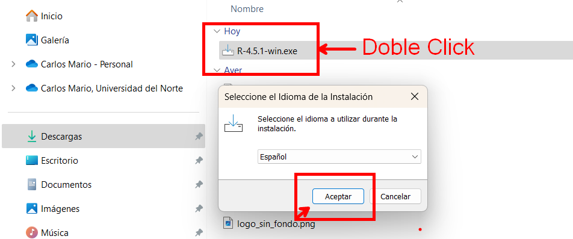
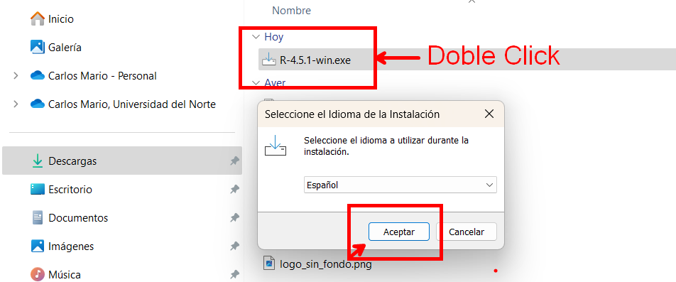
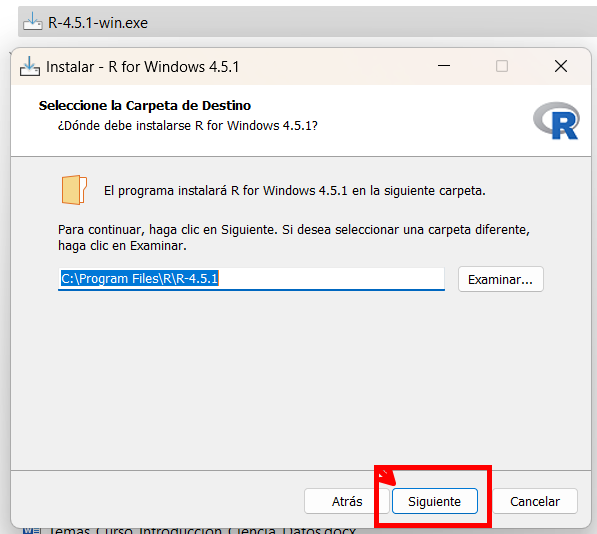
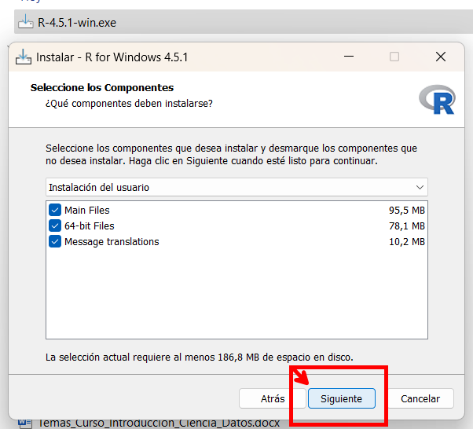
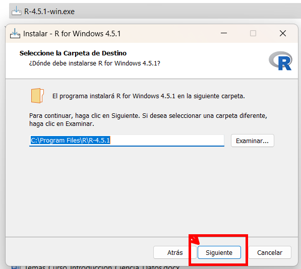
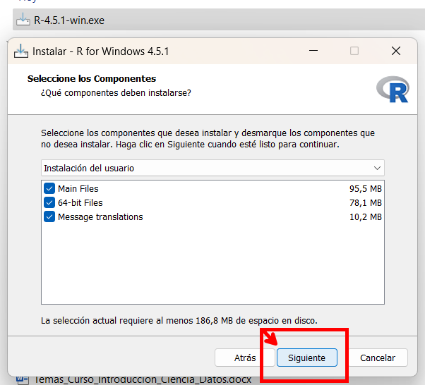
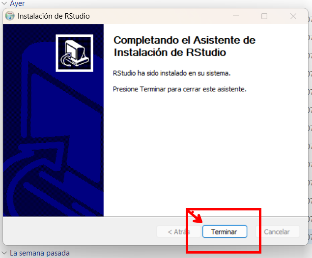
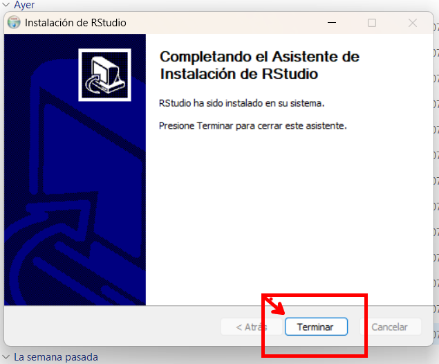

Capítulo 1 Instalación de software y paquetes
1.1 Introducción a R y RStudio
El primer paso para comenzar a trabajar con R, un lenguaje de programación especializado en estadística, ciencia de datos y visualización, es instalarlo en tu computadora. R es compatible con los principales sistemas operativos, incluyendo Windows, macOS y Linux.
1.1.1 ¿Qué es R?
R es un lenguaje de programación y un entorno de software libre dedicado al análisis estadístico y la generación de gráficos. Su potencia radica en una gran variedad de paquetes estadísticos, su comunidad activa y su capacidad de integración con otras herramientas como Python, SQL, y plataformas de visualización como Power BI o Tableau.
A continuación, se indican los enlaces oficiales para descargar (paso a paso) R:
1.1.1.1 Descargar R
- Página oficial del proyecto R:

En esta página puedes seleccionar tu sistema operativo:
- Para Windows: https://cran.r-project.org/bin/windows/base/
- Para macOS: https://cran.r-project.org/bin/macosx/
- Para Linux: https://cran.r-project.org/bin/linux/
Se realizará el proceso para la instalación de R para el sistema operativo Windows
 

 





1.1.2 ¿Qué es RStudio?
RStudio es un entorno de desarrollo integrado (IDE) que proporciona una interfaz gráfica intuitiva y muy funcional para trabajar con R. Entre sus características destacan:
- Editor de scripts con resaltado de sintaxis.
- Consola interactiva para ejecutar comandos.
- Panel de visualización de datos y objetos en memoria.
- Gráficos integrados.
- Soporte para proyectos y versiones de R.
- Integración con Git, Markdown, Quarto y Shiny.
Aunque se puede usar R sin RStudio, la mayoría de los usuarios prefieren trabajar dentro de este entorno por su productividad, organización y facilidad de uso.
A continuación, se indican los enlaces oficiales para descargar (paso a paso) RStudio:
1.1.2.1 Descargar RStudio
- Página oficial de RStudio (ahora llamado Posit):

Selecciona la versión gratuita de RStudio Desktop y descarga el instalador correspondiente a tu sistema operativo.
Se realizará el proceso para la instalación de RStudio para el sistema operativo Windows:


 

Una vez finalizada la instalación, puedes iniciar RStudio desde el acceso directo en tu escritorio o buscándolo en el menú de inicio.

Al abrir RStudio por primera vez, se presenta un entorno dividido en cuatro paneles:
- Script o editor de código (arriba a la izquierda): donde se escriben los scripts
.Ro.Rmd. - Consola (abajo a la izquierda): donde se ejecutan los comandos directamente.
- Entorno / Historial (arriba a la derecha): muestra los objetos cargados y el historial de comandos.
- Archivos, gráficos, paquetes, ayuda y visor (abajo a la derecha): herramientas auxiliares para explorar y trabajar eficientemente.
Puedes verificar que R y RStudio están funcionando correctamente ejecutando una operación simple en la consola, como:
1.2 Introducción a Tidyverse
El Tidyverse es un conjunto de paquetes integrados para el lenguaje de programación R, diseñados con el objetivo de facilitar el análisis de datos de manera estructurada, legible y eficiente. Su filosofía se basa en el concepto de “datos ordenados” (tidy data), donde cada variable es una columna, cada observación una fila, y cada tipo de unidad observacional forma una tabla.
Estos paquetes comparten principios de diseño comunes y una gramática coherente, lo que permite a los usuarios aprender un conjunto de reglas aplicables en todo el ecosistema, aumentando así la productividad y la claridad del código.

1.2.1 Principales paquetes del Tidyverse
A continuación se describen los paquetes más representativos que conforman el núcleo del Tidyverse:
üìä ggplot2
Permite la creación de visualizaciones estadísticas sofisticadas mediante la Gramática de los Gráficos (Grammar of Graphics). Con ggplot2 puedes combinar capas de datos, geometrías, escalas y temas para construir gráficos informativos y estéticamente agradables. Es ampliamente utilizado en análisis exploratorio y comunicación de resultados.
üìÇ dplyr
Facilita la manipulación de datos mediante verbos intuitivos como:
filter()para filtrar filas según condiciones lógicas,select()para elegir columnas,mutate()para crear o transformar variables,summarise()para resumir valores,group_by()para operaciones agrupadas.
Trabaja perfectamente con tibble y se puede aplicar a bases de datos con dbplyr.
üîÑ tidyr
Su propósito es convertir datos desorganizados en un formato “ordenado”. Algunas de sus funciones clave incluyen:
pivot_longer()ypivot_wider()para cambiar el formato de los datos.separate()para dividir una columna en varias.unite()para fusionar columnas en una sola.
Estas funciones son fundamentales para preparar datos antes del análisis.
üßæ readr
Ofrece funciones rápidas y confiables para importar archivos .csv, .tsv, .fwf, entre otros. Es más eficiente que read.table() y permite:
- Importar con
read_csv(),read_delim()oread_fwf(). - Detectar problemas de formato con
problems(). - Controlar tipos de datos con argumentos explícitos.
üßµ stringr
Simplifica el trabajo con cadenas de texto (caracteres). Proporciona una sintaxis coherente para tareas comunes como:
- Búsqueda de patrones (
str_detect,str_subset), - Manipulación (
str_replace,str_sub,str_trim), - Conteo (
str_count), - Extracción (
str_extract,str_match).
Ideal para limpiar y procesar textos en análisis de encuestas, redes sociales o nombres de variables.
üê± forcats
Dedicado al tratamiento de factores en R, un tipo especial de variable categórica. forcats ofrece funciones para:
- Reordenar niveles según frecuencia (
fct_infreq()), - Fusionar niveles (
fct_collapse()), - Recodificar (
fct_recode()), - Ordenar según otras variables (
fct_reorder()).
Útil en análisis estadísticos donde el tratamiento adecuado de las categorías es clave.
üïí lubridate
Permite el manejo sencillo de fechas y horas. Resuelve uno de los aspectos más complejos en análisis temporal con funciones como:
ymd(),dmy(),mdy()para convertir cadenas en fechas,hour(),minute(),second()para extraer componentes,interval(),duration()yperiod()para trabajar con intervalos de tiempo.
üìä haven
Permite importar y exportar archivos desde software estadístico como:
- SPSS (
.sav,.zsav), - Stata (
.dta), - SAS (
.sas7bdat,.xpt).
Esencial para interoperabilidad con datos institucionales y académicos que provienen de otras plataformas.
üìà readxl
Importa archivos de Excel (.xls, .xlsx) sin necesidad de tener Excel instalado. Las funciones clave incluyen:
read_excel()para leer hojas completas,excel_sheets()para listar las hojas de un archivo.
Ideal para usuarios que reciben datos administrativos, contables o estadísticos en formato Excel.
üîÅ purrr
Introduce herramientas de programación funcional en R, permitiendo aplicar funciones a listas o vectores con más control que lapply() o sapply(). Permite:
- Iterar con
map(),map_df(),map_dbl(), etc. - Trabajar con errores mediante
safely(),possibly(). - Manipular listas de manera estructurada.
Ideal para automatizar tareas repetitivas.